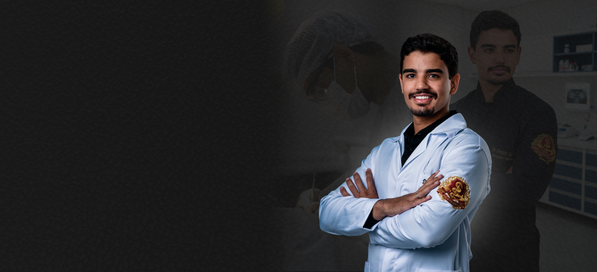
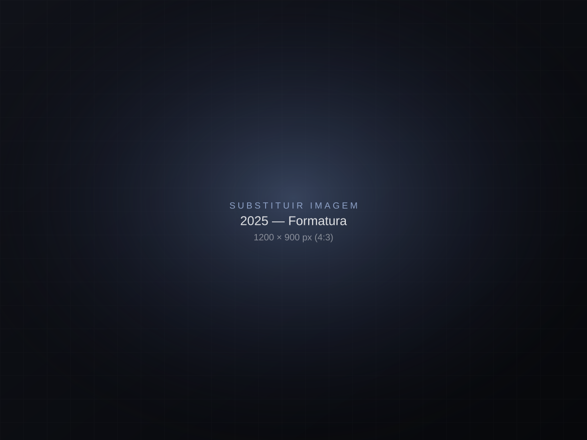
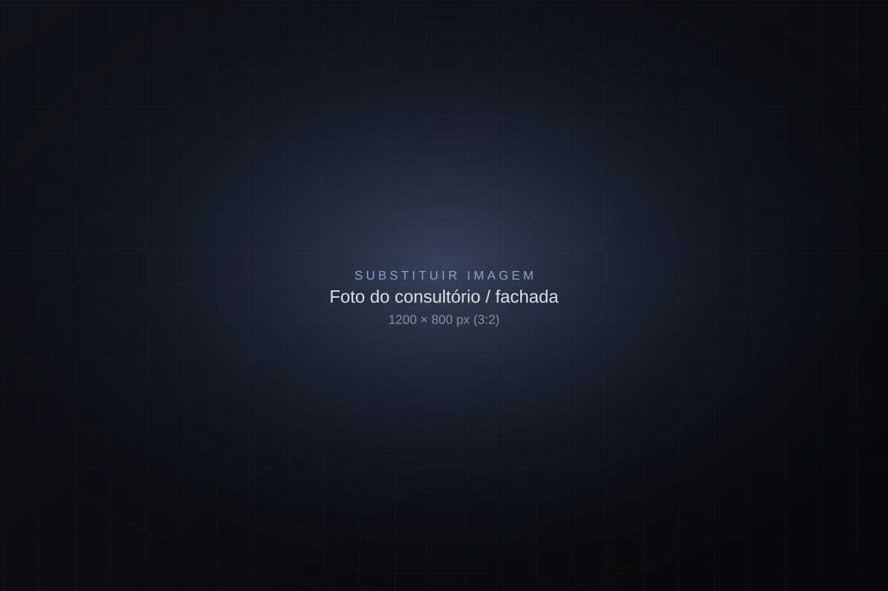

Planejamento digital
Você visualiza o resultado antes de começar, com fotos, escaneamento e simulação do novo sorriso.

Odontologia estética e reabilitação oral com planejamento digital, tecnologia e um atendimento que começa pela escuta.
Cada detalhe do atendimento foi pensado para que você se sinta seguro, confortável e confiante do início ao fim.
Você visualiza o resultado antes de começar, com fotos, escaneamento e simulação do novo sorriso.
Consultas sem pressa, com escuta atenta e explicações claras sobre cada etapa do tratamento.
Seu tempo é respeitado: horários organizados para você não esperar na recepção.
Estética que respeita o formato do seu rosto e a sua personalidade — nada artificial.
Retornos programados e canal direto para tirar dúvidas depois do tratamento.
Materiais de alta performance e equipamentos modernos para mais conforto e precisão.

Sou cirurgião-dentista apaixonado por devolver às pessoas a vontade de sorrir. Acredito que um tratamento de excelência une técnica, tecnologia e, principalmente, um olhar atento para quem está na cadeira.
Meu compromisso é oferecer a cada paciente um plano individual, transparente e confortável — do primeiro contato ao resultado final.
CRO-MG 77961
Quero ser atendido pelo Dr. Christian
Entrei no curso de Odontologia na Univale, em Governador Valadares, e descobri que cuidar de sorrisos é cuidar de pessoas.

Concluí a graduação com muita prática clínica e a certeza de querer oferecer um atendimento próximo e cuidadoso.

Aprofundei minha formação em extrações, dentes do siso e pequenos procedimentos cirúrgicos, com foco em segurança e conforto.

Agora meu propósito é colocar todo esse preparo a serviço do seu sorriso, com atenção, transparência e carinho em cada consulta.
Do cuidado preventivo à transformação completa do sorriso. Passe o mouse para ver cada tratamento.
Lentes de contato dental e facetas em resina ou porcelana.
Clareamento dental de consultório e caseiro supervisionado.
Implantes dentários e próteses fixas para recuperar função e estética.
Alinhadores invisíveis e ortodontia.
Tratamento de canal, restaurações e atendimento de urgência.
Diagnóstico e tratamento de bruxismo e DTM com placas e terapias.
Check-up, limpeza profissional e orientação para manter o sorriso saudável.

“Sempre tive vergonha de sorrir em fotos. Hoje é a primeira coisa que faço! Atendimento impecável do começo ao fim.”
“Morria de medo de dentista e o Dr. Christian me deixou totalmente tranquilo. Explicou tudo com muita paciência.”
“O clareamento ficou natural, exatamente como eu queria. Consultório lindo e super pontual.”
“Profissional atencioso, que se preocupa de verdade com o paciente. Recomendo de olhos fechados.”
“Ver a simulação do sorriso antes de começar fez toda a diferença. Resultado igualzinho!”
“Resolveu minha dor na mandíbula que eu tinha há anos. Durmo muito melhor com a placa.”
“Levei minha família toda. Atendimento humano, explicações claras e preço justo.”
“Alinhadores super discretos, ninguém percebia. Acompanhamento excelente em cada etapa.”
Reuni as perguntas que mais recebo no consultório. Se a sua não estiver aqui, é só me chamar.
Falar com o consultórioNa avaliação eu escuto suas queixas e expectativas, faço um exame completo, fotos e, se necessário, exames complementares. Ao final você recebe um plano de tratamento claro, com etapas, prazos e investimento.
Exemplo: o atendimento é particular, mas fornecemos recibo e documentação para reembolso junto ao seu plano odontológico.
Exemplo: Pix, cartão de débito e parcelamento no cartão de crédito. Condições especiais para tratamentos completos.
Depende de cada caso. Sempre que possível, priorizo técnicas minimamente invasivas. Tudo é avaliado e explicado no planejamento.
Utilizamos anestesia e técnicas de conforto para que você se sinta tranquilo durante todo o procedimento.
Com bons hábitos e manutenção, o resultado pode durar anos. Indico os cuidados ideais para o seu caso.
Preencha os dados e você será direcionado ao WhatsApp do consultório com a mensagem pronta.